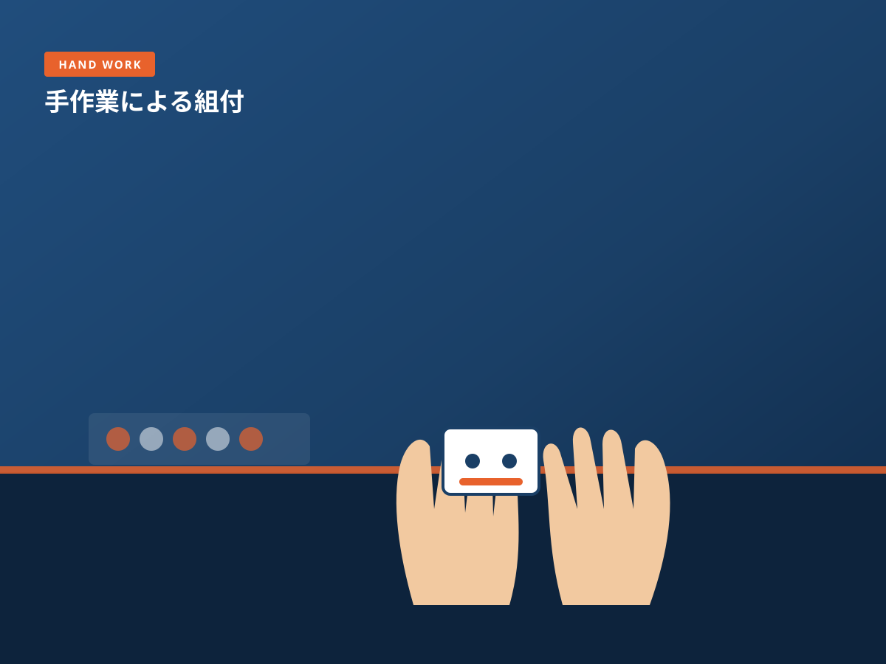
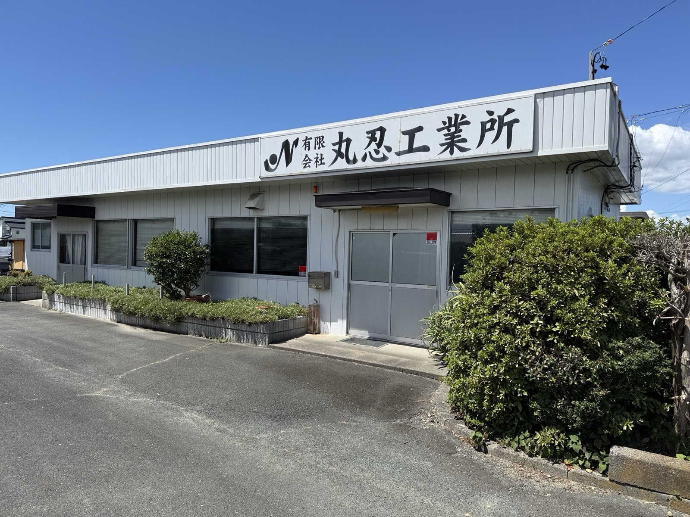
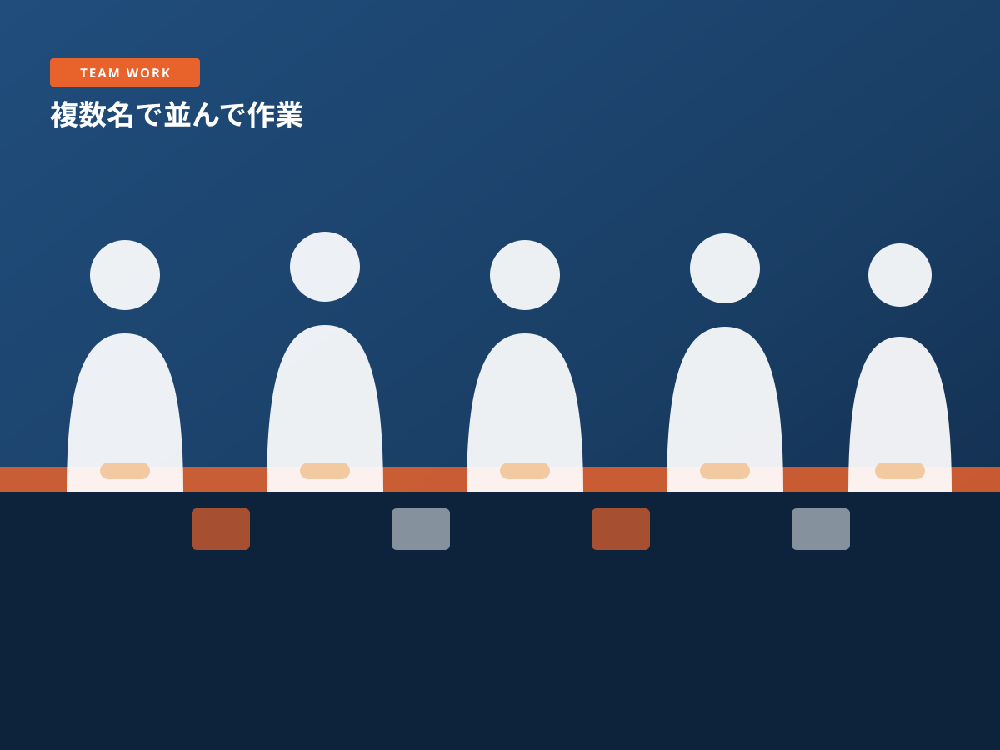
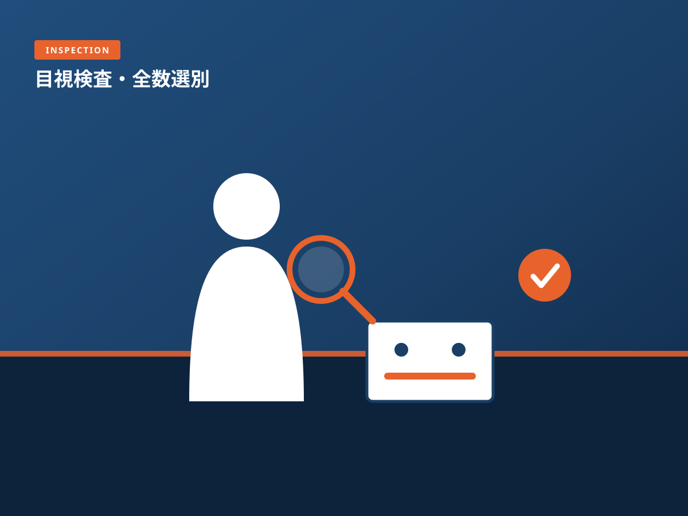
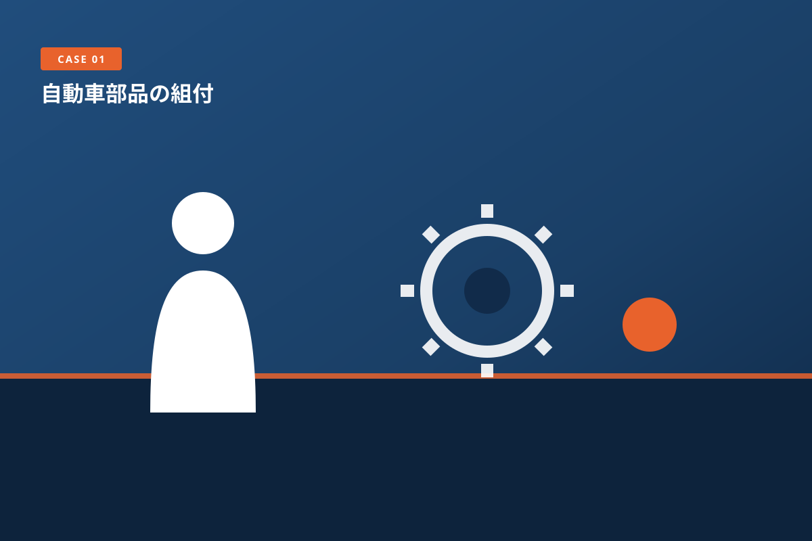
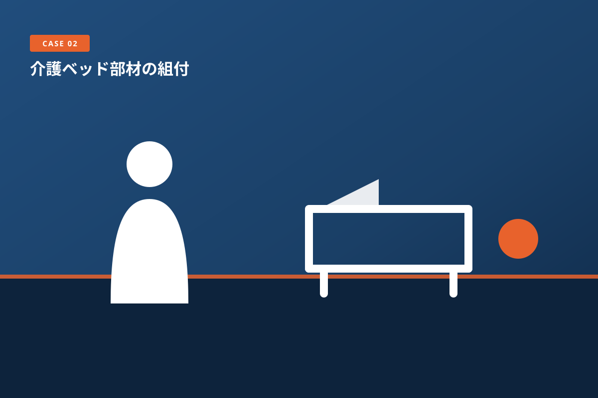
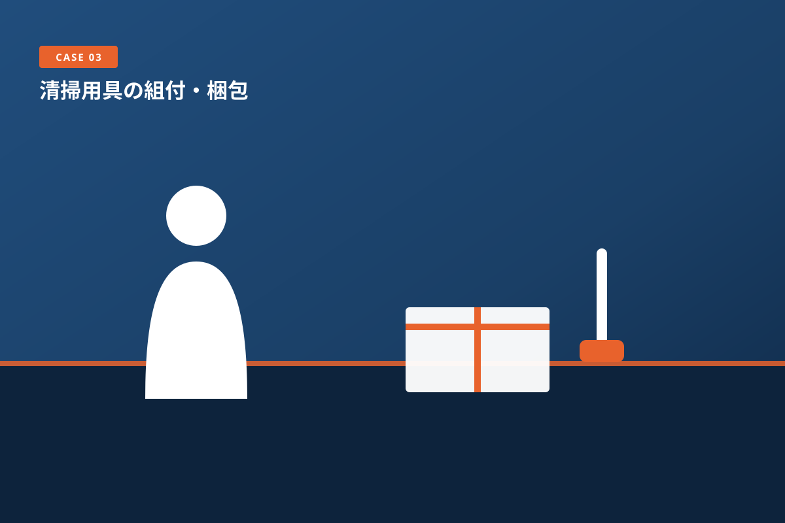
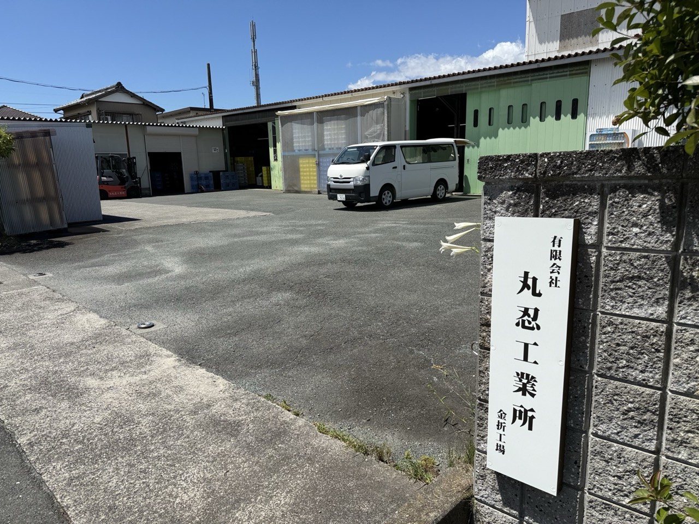
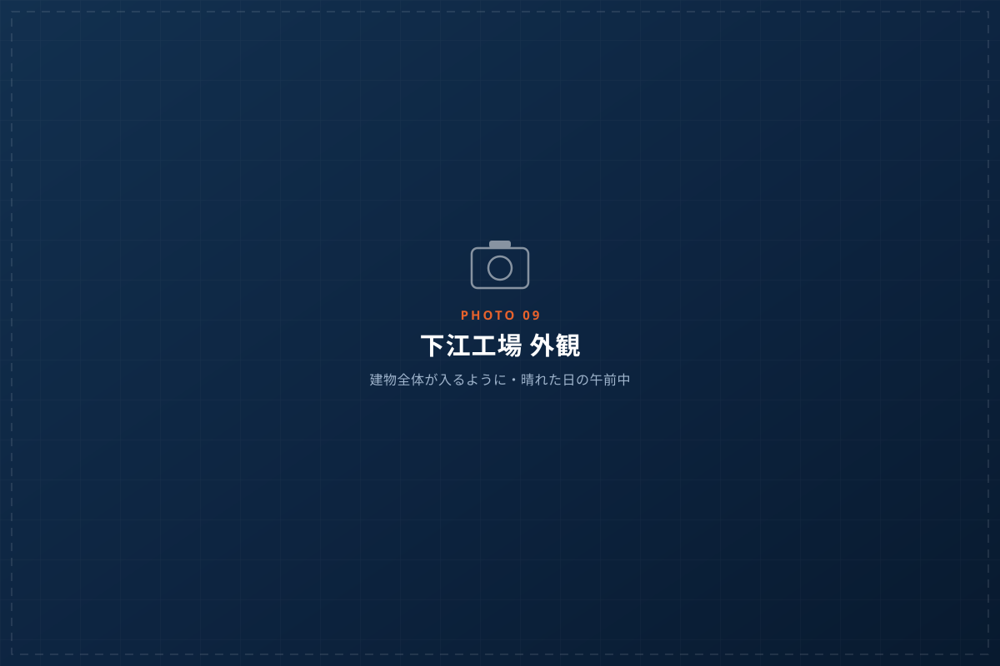
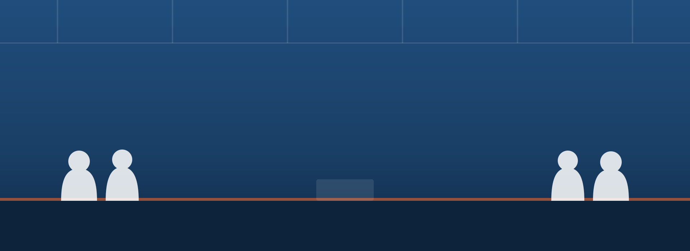

01

機械化できない工程を、
まるごと引き受けます
柔らかい部材、変形しやすい部品、微妙な力加減が要る嵌合、絡まりやすい配線の取り回し。自動機に載せようとすると治具の開発だけで多額の投資が必要な工程が、人の手なら明日から流せます。

自動化に乗らない異形部品の組付。急な増産。突発の全数選別。
丸忍工業所は、他社工場の作業者と地域の内職ネットワークで、機械にはできない手作業を、必要な人数だけ、必要な期間だけお引き受けします。
設備投資に見合わない、人を割けない、でも止められない。
そういう工程こそ、私たちの仕事です。
私たちが売っているのは、設備ではありません。
手作業の組立と検査を60年続けてきた現場と、そこで働く人です。

柔らかい部材、変形しやすい部品、微妙な力加減が要る嵌合、絡まりやすい配線の取り回し。自動機に載せようとすると治具の開発だけで多額の投資が必要な工程が、人の手なら明日から流せます。

他社工場の作業者に加えて、地域の内職ネットワークを持っています。外に出せる作業は地域へ展開できるため、対応できる人数が工場の広さで決まりません。繁忙期の増産や突発の選別にも、体制を組んで対応します。

自動車部品、介護ベッド、清掃用具。求められる精度も管理方法もまったく違う3分野を、同じ現場で並行して回しています。初めてお預かりする品目でも、立ち上げの勘所を掴んでいます。
組付だけ、検査だけ、という切り出しでも構いません。組立から検査・梱包・出荷までを一括でお預かりすることで、御社の工場スペースと管理工数を減らすご提案も可能です。

AUTOMOTIVE
樹脂・ゴム部材の組付、クリップやハーネス類の取付、全数目視検査。量産の波動対応から、市場不具合発生時の緊急選別・手直しまで対応します。

MEDICAL & CARE
大型部材の組付、可動部の動作確認、外観検査。長尺・大物の部材を扱えるスペースがあり、複数名での持ち上げや位置合わせが必要な工程にも対応します。

CONSUMER GOODS
多品種・小ロットの組立、セット組み、袋詰め・箱詰め・シール貼り。販促用のセット替えなど、短納期で仕様が変わる変則的な作業にも柔軟に対応します。
| 組立・組付 | 手組みによる部品の組付、嵌合・圧入、ねじ締め、クリップ留め、配線の取り回し、シール・ラベル貼付 |
|---|---|
| 検査 | 全数目視検査、外観検査、寸法の簡易確認、動作確認、限度見本による判定、抜き取り検査 |
| 選別・手直し | 不具合発生時の全数選別、リワーク（手直し）、再梱包。短納期・大量の緊急対応に実績があります |
| 包装・梱包 | 袋詰め、箱詰め、セット組み、緩衝材の封入、出荷伝票の貼付、パレット積み |
| その他 | 洗浄・清掃、簡易な加工、部材の仕分け・数量確認、在庫管理のお手伝い |
| ロットの目安 | 試作の小ロットから、継続的な量産まで。まずは小ロットでお試しいただくことをおすすめしています |
ここに載っていない作業でも、手作業でできることであればご相談ください。
「これは無理だろう」と思われる工程ほど、私たちが引き受けてきた仕事です。
手作業だからこそ、人任せにしません。誰がやっても同じ結果になる仕組みを、品目ごとに用意します。
| 作業標準書 | 品目ごとに写真付きの手順書を作成し、作業台に掲示します。応援や新規メンバーが入っても、同じ手順で作業できる状態を保ちます。 |
|---|---|
| 全数検査への対応 | ご要望に応じて全数検査を実施します。抜き取りでは不安が残る品目、市場不具合の対応など、人手をかけてでも確実に見たい工程にご活用ください。 |
| 限度見本の管理 | 合否の判断が分かれやすい外観項目は、お客様と限度見本をすり合わせたうえで現場に置き、判断のばらつきを抑えます。 |
| 初物確認 | ロットの立ち上がり時に初物を確認し、必要に応じてお客様へご報告してから本流動に入ります。 |
| 不具合発生時の対応 | 発生した時点で速やかにご連絡し、現品の隔離と原因の共有を行います。隠さず、早く伝えることを徹底しています。 |
工場方針
知・覚・動・考
とも・かく・うご・こう！
まず知り、気づき、動いて、そして考える。
手作業の現場では、指示を待つ人ではなく、自分で気づいて動ける人が品質をつくります。
あわせて「活気ある現場づくり」を工場目標に掲げ、全員が同じ言葉を共有しています。
受注窓口を兼ね、小物と多品種に強い本社工場。大物・長尺の部材を扱える下江工場。品目の性質に応じて使い分けています。

FACTORY 01

FACTORY 02
工場見学を受け付けています。
手作業の現場は、実際に見ていただくのがいちばん早いと考えています。お取引をご検討の段階で構いませんので、お気軽にお声がけください。
※ 他社様の製品を取り扱っている都合上、工場内の撮影はご遠慮いただいております。
いずれも長いお付き合いをいただいており、最長で32年間、継続してご発注をいただいています。
※ 守秘義務のため、企業名の掲載は控えております。
初めてのご依頼は、小ロットのお試しから始めていただくのが確実です。
| STEP 1 | お問い合わせ お電話またはフォームからご連絡ください。図面や仕様が固まっていない段階でも構いません。 |
|---|---|
| STEP 2 | ヒアリング・現品の確認 作業内容、数量、納期をお伺いします。現品やサンプルをお預かりできれば、実際に手を動かして工数を確認します。 |
| STEP 3 | お見積り 工数に基づいてお見積りをご提出します。お引き受けが難しい場合も、その理由を率直にお伝えします。 |
| STEP 4 | 試作・初回ロット 作業標準書を作成し、初物を確認いただいたうえで本流動に入ります。必要に応じて工場をご見学ください。 |
| STEP 5 | 量産・継続対応 安定稼働後は、数量の増減や仕様変更にも都度対応します。繁忙期の増員もご相談ください。 |
MESSAGE
自動化が進むほど、そこから外れる仕事が浮かび上がります。形が複雑すぎる、数が読めない、明日までにやらなければならない。設備では割に合わない工程が、必ず残ります。
丸忍工業所は、創業から60年、その領域だけをやってきました。私たちの設備は人です。だからこそ、人を増やすこともできますし、昨日と違う品物を流すこともできます。
「これは外に出せないだろう」と思われている工程ほど、一度ご相談ください。お引き受けできるかどうかは、率直にお答えします。
有限会社 丸忍工業所 代表取締役 鈴木久仁則
| 商号 | 有限会社 丸忍工業所 |
|---|---|
| 創業 | 1965年（昭和40年） |
| 代表者 | 代表取締役 鈴木久仁則 |
| 資本金 | 3,000,000円 |
| 事業内容 | 各種製品の組立・組付、目視検査、選別・手直し、包装・梱包の受託 |
| 本社・工場 |
金折工場（本社） 〒435-0026 静岡県浜松市中央区金折町273番地 TEL 053-427-0388／FAX 053-427-0389 下江工場 〒430-0825 静岡県浜松市中央区下江町727 TEL 053-545-6853／FAX 053-545-6854 |
| 営業時間 | 8:30 - 17:30（土曜・日曜・祝日休業） |
| 取引銀行 | 〇〇銀行 〇〇支店 |

図面が固まっていなくても、数量が読めなくても構いません。
まず現状をお聞かせいただければ、お引き受けできるかどうかを率直にお答えします。
お急ぎの場合は、お電話がいちばん早くお答えできます。
フォームは24時間受け付けており、内容を確認のうえ、担当者よりご連絡いたします。